Vertex cover
In the mathematical discipline of graph theory, a vertex cover of a graph is a set of vertices such that each edge of the graph is incident to at least one vertex of the set. The problem of finding a minimum vertex cover is a classical optimization problem in computer science and is a typical example of an NP-hard optimization problem that has an approximation algorithm. Its decision version, the vertex cover problem, was one of Karp's 21 NP-complete problems and is therefore a classical NP-complete problem in computational complexity theory. Furthermore, the vertex cover problem is fixed-parameter tractable and a central problem in parameterized complexity theory.
The minimum vertex cover problem can be formulated as a half-integral linear program whose dual linear program is the maximum matching problem.
| Covering-packing dualities | |
| Covering problems | Packing problems |
|---|---|
| Minimum set cover | Maximum set packing |
| Minimum vertex cover | Maximum matching |
| Minimum edge cover | Maximum independent set |
Contents
[hide]Definition[edit]
Formally, a vertex-cover of an undirected graph G=(V, E) is a subset V' of V such that if edge (u, v) is an edge of G then either u in V` or v in V` (or both). The set V` is said to cover the edges of G. The following figure shows examples of vertex covers in two graphs (and the set V` is marked with red).

A minimum vertex cover is a vertex cover of smallest possible size. The vertex cover number is the size of a minimum vertex cover. The following figure shows examples of minimum vertex covers in the previous graphs.
{kind=link}
Examples[edit]
- The set of all vertices is a vertex cover.
- The endpoints of any maximal matching form a vertex cover.
- The complete bipartite graph 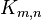 has a minimum vertex cover of size 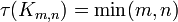.
Properties[edit]
- A set of vertices is a vertex cover, if and only if its complement is an independent set. An immediate consequence is:
- The number of vertices of a graph is equal to its minimum vertex cover number plus the size of a maximum independent set (Gallai 1959).
Computational problem[edit]
The minimum vertex cover problem is the optimization problem of finding a smallest vertex cover in a given graph.
- INSTANCE: Graph
- OUTPUT: Smallest number 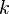 such that has a vertex cover of size .
If the problem is stated as a decision problem, it is called the vertex cover problem:
- INSTANCE: Graph and positive integer .
- QUESTION: Does have a vertex cover of size at most ?
The vertex cover problem is an NP-complete problem: it was one of Karp's 21 NP-complete problems. It is often used in computational complexity theory as a starting point for NP-hardness proofs.
ILP formulation[edit]
Assume that every vertex has an associated cost of 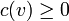. The (weighted) minimum vertex cover problem can be formulated as the following integer linear program (ILP).[1]
-
minimize 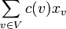 (minimize the total cost) subject to 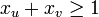 for all 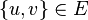 (cover every edge of the graph) 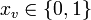 for all 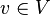. (every vertex is either in the vertex cover or not)
This ILP belongs to the more general class of ILPs for covering problems. The integrality gap of this ILP is 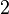, so its relaxation gives a factor- approximation algorithm for the minimum vertex cover problem. Furthermore, the linear programming relaxation of that ILP is half-integral, that is, there exists an optimal solution for which each entry 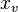 is either 0, 1/2, or 1.
Exact evaluation[edit]
The decision variant of the vertex cover problem is NP-complete, which means it is unlikely that there is an efficient algorithm to solve it exactly. NP-completeness can be proven by reduction from 3-satisfiability or, as Karp did, by reduction from the clique problem. Vertex cover remains NP-complete even in cubic graphs[2] and even in planar graphs of degree at most 3.[3]
For bipartite graphs, the equivalence between vertex cover and maximum matching described by König's theorem allows the bipartite vertex cover problem to be solved in polynomial time.
Fixed-parameter tractability[edit]
An exhaustive search algorithm can solve the problem in time 2knO(1). Vertex cover is therefore fixed-parameter tractable, and if we are only interested in small k, we can solve the problem in polynomial time. One algorithmic technique that works here is called bounded search tree algorithm, and its idea is to repeatedly choose some vertex and recursively branch, with two cases at each step: place either the current vertex or all its neighbours into the vertex cover. The algorithm for solving vertex cover that achieves the best asymptotic dependence on the parameter runs in time 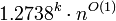.[4] Under reasonable complexity-theoretic assumptions, namely the exponential time hypothesis, this running time cannot be improved to 2o(k)nO(1).
However, for planar graphs, and more generally, for graphs excluding some fixed graph as a minor, a vertex cover of size k can be found in time 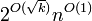, i.e., the problem is subexponential fixed-parameter tractable.[5] This algorithm is again optimal, in the sense that, under the exponential time hypothesis, no algorithm can solve vertex cover on planar graphs in time 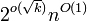.[6]
Approximate evaluation[edit]
One can find a factor-2 approximation by repeatedly taking both endpoints of an edge into the vertex cover, then removing them from the graph. Put otherwise, we find a maximal matching M with a greedy algorithm and construct a vertex cover C that consists of all endpoints of the edges in M. In the following figure, a maximal matching M is marked with red, and the vertex cover C is marked with blue.
{kind=link}
The set C constructed this way is a vertex cover: suppose that an edge e is not covered by C; then M ∪ {e} is a matching and e ∉ M, which is a contradiction with the assumption that M is maximal. Furthermore, if e = {u, v} ∈ M, then any vertex cover – including an optimal vertex cover – must contain u or v (or both); otherwise the edge e is not covered. That is, an optimal cover contains at least one endpoint of each edge in M; in total, the set C is at most 2 times as large as the optimal vertex cover.
This simple algorithm was discovered independently by Fanica Gavril and Mihalis Yannakakis.[7]
More involved techniques show that there are approximation algorithms with a slightly better approximation factor. For example, an approximation algorithm with an approximation factor of 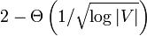 is known.[8]
Inapproximability[edit]
No better constant-factor approximation algorithm than the above one is known. The minimum vertex cover problem is APX-complete, that is, it cannot be approximated arbitrarily well unless P = NP. Using techniques from the PCP theorem, Dinur and Safra proved in 2005 that minimum vertex cover cannot be approximated within a factor of 1.3606 for any sufficiently large vertex degree unless P = NP.[9] Moreover, if the unique games conjecture is true then minimum vertex cover cannot be approximated within any constant factor better than 2.[10]
Although finding the minimum-size vertex cover is equivalent to finding the maximum-size independent set, as described above, the two problems are not equivalent in an approximation-preserving way: The Independent Set problem has no constant-factor approximation unless P = NP.
Vertex cover in hypergraphs[edit]
Given a collection of sets, a set which intersects all sets in the collection in at least one element is called a hitting set, and a simple NP-hard problem is to find a hitting set of smallest size or minimum hitting set. By mapping the sets in the collection onto hyperedges, this can be understood as a natural generalization of the vertex cover problem to hypergraphs which is often just called vertex cover for hypergraphs and, in a more combinatorial context, transversal. The notions of hitting set and set cover are equivalent.
Formally, let H = (V, E) be a hypergraph with vertex set V and hyperedge set E. Then a set S ⊆ V is called hitting set of H if, for all edges e ∈ E, it holds S ∩ e ≠ ∅. The computational problems minimum hitting set and hitting set are defined as in the case of graphs. Note that we get back the case of vertex covers for simple graphs if the maximum size of the hyperedges is 2.
If that size is restricted to d, the problem of finding a minimum d-hitting set permits a d-approximation algorithm. Assuming the unique games conjecture, this is the best constant-factor algorithm that is possible and otherwise there is the possibility of improving the approximation to d − 1.[10]
Fixed-parameter tractability[edit]
For the hitting set problem, different parameterizations make sense.[11] The hitting set problem is W[2]-complete for the parameter OPT, that is, it is unlikely that there is an algorithm that runs in time f(OPT)nO(1) where OPT is the cardinality of the smallest hitting set. The hitting set problem is fixed-parameter tractable for the parameter OPT + d, where d is the size of the largest edge of the hypergraph. More specifically, there is an algorithm for hitting set that runs in time dOPTnO(1).
Hitting set and set cover[edit]
The hitting set problem is equivalent to the set cover problem: An instance of set cover can be viewed as an arbitrary bipartite graph, with sets represented by vertices on the left, elements of the universe represented by vertices on the right, and edges representing the inclusion of elements in sets. The task is then to find a minimum cardinality subset of left-vertices which covers all of the right-vertices. In the hitting set problem, the objective is to cover the left-vertices using a minimum subset of the right vertices. Converting from one problem to the other is therefore achieved by interchanging the two sets of vertices.
Applications[edit]
An example of a practical application involving the hitting set problem arises in efficient dynamic detection of race conditions.[12] In this case, each time global memory is written, the current thread and set of locks held by that thread are stored. Under lockset-based detection, if later another thread writes to that location and there is not a race, it must be because it holds at least one lock in common with each of the previous writes. Thus the size of the hitting set represents the minimum lock set size to be race-free. This is useful in eliminating redundant write events, since large lock sets are considered unlikely in practice.
Notes[edit]
- Jump up ^ Vazirani 2001, pp. 122–123
- Jump up ^ Garey, Johnson & Stockmeyer 1974
- Jump up ^ Garey & Johnson 1977; Garey & Johnson 1979, pp. 190 and 195.
- Jump up ^ Chen, Kanj & Xia 2006
- Jump up ^ Demaine et al. 2005
- Jump up ^ Flum & Grohe (2006, p. 437)
- Jump up ^ Papadimitriou & Steiglitz 1998, p. 432, mentions both Gavril and Yannakakis. Garey & Johnson 1979, p. 134, cites Gavril.
- Jump up ^ Karakostas 2004
- Jump up ^ Dinur & Safra 2005
- ^ Jump up to: a b Khot & Regev 2008
- Jump up ^ Flum & Grohe (2006, p. 10ff)
- Jump up ^ O'Callahan & Choi 2003
References[edit]
- Chen, Jianer; Kanj, Iyad A.; Xia, Ge (2006). "Improved Parameterized Upper Bounds for Vertex Cover". Mfcs 2006. Lecture Notes in Computer Science 4162: 238–249. doi:10.1007/11821069_21. ISBN 978-3-540-37791-7.
- Cormen, Thomas H.; Leiserson, Charles E.; Rivest, Ronald L.; Stein, Clifford (2001). Introduction to Algorithms. Cambridge, Mass.: MIT Press and McGraw-Hill. pp. 1024–1027. ISBN 0-262-03293-7.
- Demaine, Erik; Fomin, Fedor V.; Hajiaghayi, Mohammad Taghi; Thilikos, Dimitrios M. (2005). "Subexponential parameterized algorithms on bounded-genus graphs and H-minor-free graphs". Journal of the ACM 52 (6): 866–893. doi:10.1145/1101821.1101823. Retrieved 2010-03-05.
- Dinur, Irit; Safra, Samuel (2005). "On the hardness of approximating minimum vertex cover". Annals of Mathematics 162 (1): 439–485. doi:10.4007/annals.2005.162.439. Retrieved 2011-11-03.
- Flum, Jörg; Grohe, Martin (2006). Parameterized Complexity Theory. Springer. ISBN 978-3-540-29952-3. Retrieved 2010-03-05.
- Garey, Michael R.; Johnson, David S. (1977). "The rectilinear Steiner tree problem is NP-complete". SIAM Journal on Applied Mathematics 32 (4): 826–834. doi:10.1137/0132071.
- Garey, Michael R.; Johnson, David S. (1979). Computers and Intractability: A Guide to the Theory of NP-Completeness. W.H. Freeman. ISBN 0-7167-1045-5. A1.1: GT1, pg.190.
- Garey, Michael R.; Johnson, David S.; Stockmeyer, Larry (1974). "Some simplified NP-complete problems". Proceedings of the sixth annual ACM symposium on Theory of computing. pp. 47–63. doi:10.1145/800119.803884
- Gallai, Tibor "Über extreme Punkt- und Kantenmengen." Ann. Univ. Sci. Budapest, Eötvös Sect. Math. 2, 133-138, 1959.
- Karakostas, George (2004). "A better approximation ratio for the Vertex Cover problem". ECCC TR04-084.
- Khot, Subhash; Regev, Oded (2008). "Vertex cover might be hard to approximate to within 2−ε". Journal of Computer and System Sciences 74 (3): 335–349. doi:10.1016/j.jcss.2007.06.019.
- O'Callahan, Robert; Choi, Jong-Deok (2003). Hybrid dynamic data race detection. "Proceedings of the ACM SIGPLAN symposium on principles and practice of parallel programming (PPoPP 2003) and workshop on partial evaluation and semantics-based program manipulation (PEPM 2003)". ACM SIGPLAN Notices 38 (10): 167–178. doi:10.1145/966049.781528.
- Papadimitriou, Christos H.; Steiglitz, Kenneth (1998). Combinatorial Optimization: Algorithms and Complexity. Dover
- Vazirani, Vijay V. (2001). Approximation Algorithms. Springer-Verlag. ISBN 3-540-65367-8.